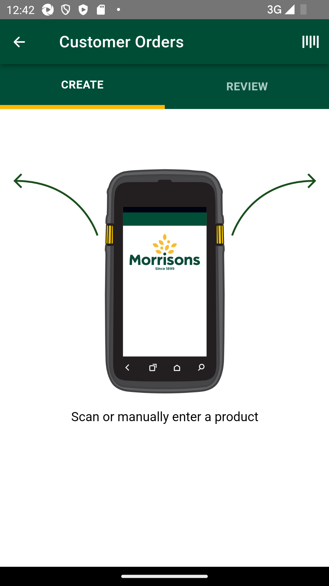
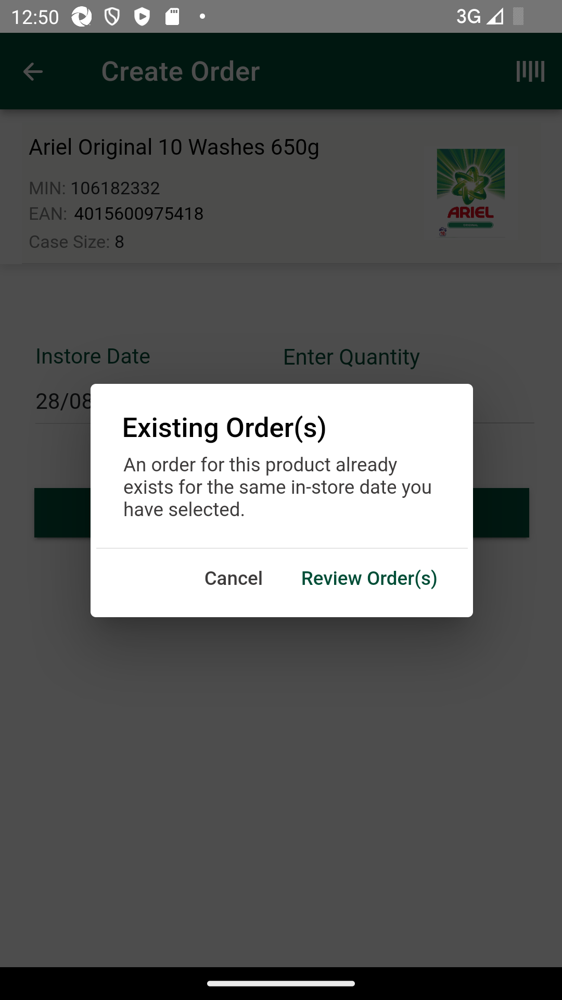
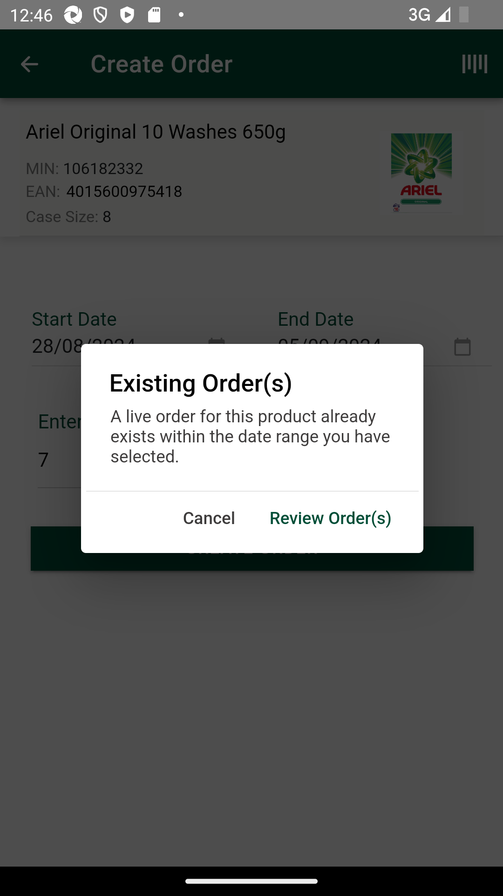

-
Automation Demo
1:40:12 PM / 00:10:19:289 Fail
Automation Demo
08.20.2024 1:40:12 PM 08.20.2024 1:50:32 PM 00:10:19:289 · #test-id=1@CO_DemoFailSMA-54535_[INT] Customer order | Review orders | SMA_TC12 To verify that customer reviews created customer order when For any existing order prompt , when clicked on review orders button should navigate to review screen with Existing order sorted together and then all other orders.FailSMA-54535_[INT] Customer order | Review orders | SMA_TC12 To verify that customer reviews created customer order when For any existing order prompt , when clicked on review orders button should navigate to review screen with Existing order sorted together and then all other orders.Given I enter Username and Password for SMA Collegue userWhen I click on login button for SMAAnd I click on 'stockMngmtText' on page 'HomePagePO_New'And I scroll down to "Customer Orders"And I click "sObjectName" "Customer Orders" on page "ManagerOrderPage"And I click "sTabName" "CREATE" on page "ManagerOrderPage"And I click on 'BarCodeBtn' on page 'MOCO.ManagerOrderPage'Then I Enter "106182332" in the "BarCodeEdit" on page 'ManagerOrderPage' and searchThen I verify "valid item details" is available to view for "Orders" for "Heinz Beanz Jalfrezi 390g,MIN,EAN,Case Size" on "ManagerOrderPage"Field MIN with value MIN: 106182332Field EAN with value EAN:Field Case Size with value Case Size: 8And I Verify "sObjectName" "Instore Date" on page "ManagerOrderPage"And I click on 'InstoreDateBtn' on page 'MOCO.ManagerOrderPage'And I select a date of date range 8And I click "oButton" "DONE" on page "ManagerOrderPage"Then I Enter the quantity as "7", "QuantityEdt" and click on "CREATE_ORDER" button on "MOCO.ManagerOrderPage" pageThen I verify the error message "errorMsg" "errorMsg1" "Existing Order(s) A live order for this product already exists within the date range you have selected." is displayed on page "ManagerOrderPage"com.morrisons.common.action.Hook.afterScenario(io.cucumber.java.Scenario)
And I Verify "oButton" "Cancel" on page "ManagerOrderPage"Step skippedAnd I Verify "oButton" "Review Order(s)" on page "ManagerOrderPage"Step skippedAnd I click "oButton" "Review Order(s)" on page "ManagerOrderPage"Step skippedThen I verify review order sorted with existing order sorted together and then all other ordersStep skippedFailSMA-54535_[INT] Customer order | Review orders | SMA_TC12 To verify that customer reviews created customer order when For any existing order prompt , when clicked on review orders button should navigate to review screen with Existing order sorted together and then all other orders.Given I enter Username and Password for SMA Collegue userWhen I click on login button for SMAAnd I click on 'stockMngmtText' on page 'HomePagePO_New'And I scroll down to "Customer Orders"And I click "sObjectName" "Customer Orders" on page "ManagerOrderPage"And I click "sTabName" "CREATE" on page "ManagerOrderPage"And I click on 'BarCodeBtn' on page 'MOCO.ManagerOrderPage'Then I Enter "106182332" in the "BarCodeEdit" on page 'ManagerOrderPage' and searchThen I verify "valid item details" is available to view for "Orders" for "Heinz Beanz Jalfrezi 390g,MIN,EAN,Case Size" on "ManagerOrderPage"Field MIN with value MIN: 106182332Field EAN with value EAN:Field Case Size with value Case Size: 8And I Verify "sObjectName" "Instore Date" on page "ManagerOrderPage"And I click on 'InstoreDateBtn' on page 'MOCO.ManagerOrderPage'And I select a date of date range 8And I click "oButton" "DONE" on page "ManagerOrderPage"Then I Enter the quantity as "7", "QuantityEdt" and click on "CREATE_ORDER" button on "MOCO.ManagerOrderPage" pageThen I verify the error message "errorMsg" "errorMsg1" "Existing Order(s) A live order for this product already exists within the date range you have selected." is displayed on page "ManagerOrderPage"com.morrisons.common.action.Hook.afterScenario(io.cucumber.java.Scenario)
And I Verify "oButton" "Cancel" on page "ManagerOrderPage"Step skippedAnd I Verify "oButton" "Review Order(s)" on page "ManagerOrderPage"Step skippedAnd I click "oButton" "Review Order(s)" on page "ManagerOrderPage"Step skippedThen I verify review order sorted with existing order sorted together and then all other ordersStep skipped -
SMA-56764_[INT] [INT] Manager order | Review orders |
1:43:56 PM / 00:02:59:642 Fail
SMA-56764_[INT] [INT] Manager order | Review orders |
08.20.2024 1:43:56 PM 08.20.2024 1:46:55 PM 00:02:59:642 · #test-id=47@Review_MOCO_UIFailSMA-56764_[INT] [INT] Manager order | Review orders | SMA_TC12 To verify that Manager reviews created manager order when For any existing order prompt , when clicked on review orders button should navigate to review screen with Existing order sorted together and then all other orders.FailSMA-56764_[INT] [INT] Manager order | Review orders | SMA_TC12 To verify that Manager reviews created manager order when For any existing order prompt , when clicked on review orders button should navigate to review screen with Existing order sorted together and then all other orders.Given I enter Username and Password for SMA Manager userWhen I click on login button for SMAAnd I click on 'stockMngmtText' on page 'HomePagePO_New'And I scroll down to "Manager Orders"And I click "sObjectName" "Manager Orders" on page "ManagerOrderPage"And I click "sTabName" "CREATE" on page "ManagerOrderPage"And I click on 'BarCodeBtn' on page 'MOCO.ManagerOrderPage'Then I Enter "106182332" in the "BarCodeEdit" on page 'ManagerOrderPage' and searchThen I verify "valid item details" is available to view for "Orders" for "Heinz Beanz Jalfrezi 390g,MIN,EAN,Case Size" on "ManagerOrderPage"Field MIN with value MIN: 106182332Field EAN with value EAN:Field Case Size with value Case Size: 8And I Verify "sObjectName" "Start Date" on page "ManagerOrderPage"And I Verify "sObjectName" "End Date" on page "ManagerOrderPage"And I click on 'startDateBtn' on page 'MOCO.ManagerOrderPage'And I select a date of date range 8And I click "oButton" "DONE" on page "ManagerOrderPage"And I click on 'EndDateBtn' on page 'MOCO.ManagerOrderPage'And I select a date of date range 16And I click "oButton" "DONE" on page "ManagerOrderPage"Then I Enter the quantity as "7", "QuantityEdt" and click on "CREATE_ORDER" button on "MOCO.ManagerOrderPage" pageThen I verify the error message "errorMsg" "errorMsg1" "Existing Order(s) A live order for this product already exists within the date range you have selected. " is displayed on page "ManagerOrderPage"com.morrisons.common.action.Hook.afterScenario(io.cucumber.java.Scenario)
And I Verify "oButton" "Cancel" on page "ManagerOrderPage"Step skippedAnd I Verify "oButton" "Review Order(s)" on page "ManagerOrderPage"Step skippedAnd I click "oButton" "Review Order(s)" on page "ManagerOrderPage"Step skippedThen I verify review order sorted with existing order sorted together and then all other ordersStep skipped
-
org.openqa.selenium.TimeoutException
1 tests
org.openqa.selenium.TimeoutException
1 failedStatus Timestamp TestName Fail 13:42:42 PM Then I verify the error message "errorMsg" "errorMsg1" "Existing Order(s) A live order for this product already exists within the date range you have selected." is displayed on page "ManagerOrderPage" Automation Demo.SMA-54535_[INT] Customer order | Review orders | SMA_TC12 To verify that customer reviews created customer order when For any existing order prompt , when clicked on review orders button should navigate to review screen with Existing order sorted together and then all other orders..Then I verify the error message "errorMsg" "errorMsg1" "Existing Order(s) A live order for this product already exists within the date range you have selected." is displayed on page "ManagerOrderPage" -
java.lang.AssertionError
2 tests
java.lang.AssertionError
2 failedStatus Timestamp TestName Fail 13:46:50 PM Then I verify the error message "errorMsg" "errorMsg1" "Existing Order(s) A live order for this product already exists within the date range you have selected. " is displayed on page "ManagerOrderPage" SMA-56764_[INT] [INT] Manager order | Review orders |.SMA-56764_[INT] [INT] Manager order | Review orders | SMA_TC12 To verify that Manager reviews created manager order when For any existing order prompt , when clicked on review orders button should navigate to review screen with Existing order sorted together and then all other orders..Then I verify the error message "errorMsg" "errorMsg1" "Existing Order(s) A live order for this product already exists within the date range you have selected. " is displayed on page "ManagerOrderPage"Fail 13:50:27 PM Then I verify the error message "errorMsg" "errorMsg1" "Existing Order(s) A live order for this product already exists within the date range you have selected." is displayed on page "ManagerOrderPage" Automation Demo.SMA-54535_[INT] Customer order | Review orders | SMA_TC12 To verify that customer reviews created customer order when For any existing order prompt , when clicked on review orders button should navigate to review screen with Existing order sorted together and then all other orders..Then I verify the error message "errorMsg" "errorMsg1" "Existing Order(s) A live order for this product already exists within the date range you have selected." is displayed on page "ManagerOrderPage"
-
@sma
5 tests
@sma
5 failedStatus Timestamp TestName Fail 13:40:12 PM SMA-54535_[INT] Customer order | Review orders | SMA_TC12 To verify that customer reviews created customer order when For any existing order prompt , when clicked on review orders button should navigate to review screen with Existing order sorted together and then all other orders. Automation Demo.SMA-54535_[INT] Customer order | Review orders | SMA_TC12 To verify that customer reviews created customer order when For any existing order prompt , when clicked on review orders button should navigate to review screen with Existing order sorted together and then all other orders.Fail 13:40:12 PM SMA-54535_[INT] Customer order | Review orders | SMA_TC12 To verify that customer reviews created customer order when For any existing order prompt , when clicked on review orders button should navigate to review screen with Existing order sorted together and then all other orders. Automation Demo.SMA-54535_[INT] Customer order | Review orders | SMA_TC12 To verify that customer reviews created customer order when For any existing order prompt , when clicked on review orders button should navigate to review screen with Existing order sorted together and then all other orders.Fail 13:43:56 PM SMA-56764_[INT] [INT] Manager order | Review orders | SMA_TC12 To verify that Manager reviews created manager order when For any existing order prompt , when clicked on review orders button should navigate to review screen with Existing order sorted together and then all other orders. SMA-56764_[INT] [INT] Manager order | Review orders |.SMA-56764_[INT] [INT] Manager order | Review orders | SMA_TC12 To verify that Manager reviews created manager order when For any existing order prompt , when clicked on review orders button should navigate to review screen with Existing order sorted together and then all other orders.Fail 13:43:56 PM SMA-56764_[INT] [INT] Manager order | Review orders | SMA_TC12 To verify that Manager reviews created manager order when For any existing order prompt , when clicked on review orders button should navigate to review screen with Existing order sorted together and then all other orders. SMA-56764_[INT] [INT] Manager order | Review orders |.SMA-56764_[INT] [INT] Manager order | Review orders | SMA_TC12 To verify that Manager reviews created manager order when For any existing order prompt , when clicked on review orders button should navigate to review screen with Existing order sorted together and then all other orders.Fail 13:47:45 PM SMA-54535_[INT] Customer order | Review orders | SMA_TC12 To verify that customer reviews created customer order when For any existing order prompt , when clicked on review orders button should navigate to review screen with Existing order sorted together and then all other orders. Automation Demo.SMA-54535_[INT] Customer order | Review orders | SMA_TC12 To verify that customer reviews created customer order when For any existing order prompt , when clicked on review orders button should navigate to review screen with Existing order sorted together and then all other orders. -
@CO_Demo
2 tests
@CO_Demo
2 failedStatus Timestamp TestName Fail 13:40:12 PM Automation Demo Fail 13:40:12 PM SMA-54535_[INT] Customer order | Review orders | SMA_TC12 To verify that customer reviews created customer order when For any existing order prompt , when clicked on review orders button should navigate to review screen with Existing order sorted together and then all other orders. Automation Demo.SMA-54535_[INT] Customer order | Review orders | SMA_TC12 To verify that customer reviews created customer order when For any existing order prompt , when clicked on review orders button should navigate to review screen with Existing order sorted together and then all other orders. -
@ExistAllOrdersVerf
5 tests
@ExistAllOrdersVerf
5 failedStatus Timestamp TestName Fail 13:40:12 PM SMA-54535_[INT] Customer order | Review orders | SMA_TC12 To verify that customer reviews created customer order when For any existing order prompt , when clicked on review orders button should navigate to review screen with Existing order sorted together and then all other orders. Automation Demo.SMA-54535_[INT] Customer order | Review orders | SMA_TC12 To verify that customer reviews created customer order when For any existing order prompt , when clicked on review orders button should navigate to review screen with Existing order sorted together and then all other orders.Fail 13:40:12 PM SMA-54535_[INT] Customer order | Review orders | SMA_TC12 To verify that customer reviews created customer order when For any existing order prompt , when clicked on review orders button should navigate to review screen with Existing order sorted together and then all other orders. Automation Demo.SMA-54535_[INT] Customer order | Review orders | SMA_TC12 To verify that customer reviews created customer order when For any existing order prompt , when clicked on review orders button should navigate to review screen with Existing order sorted together and then all other orders.Fail 13:43:56 PM SMA-56764_[INT] [INT] Manager order | Review orders | SMA_TC12 To verify that Manager reviews created manager order when For any existing order prompt , when clicked on review orders button should navigate to review screen with Existing order sorted together and then all other orders. SMA-56764_[INT] [INT] Manager order | Review orders |.SMA-56764_[INT] [INT] Manager order | Review orders | SMA_TC12 To verify that Manager reviews created manager order when For any existing order prompt , when clicked on review orders button should navigate to review screen with Existing order sorted together and then all other orders.Fail 13:43:56 PM SMA-56764_[INT] [INT] Manager order | Review orders | SMA_TC12 To verify that Manager reviews created manager order when For any existing order prompt , when clicked on review orders button should navigate to review screen with Existing order sorted together and then all other orders. SMA-56764_[INT] [INT] Manager order | Review orders |.SMA-56764_[INT] [INT] Manager order | Review orders | SMA_TC12 To verify that Manager reviews created manager order when For any existing order prompt , when clicked on review orders button should navigate to review screen with Existing order sorted together and then all other orders.Fail 13:47:45 PM SMA-54535_[INT] Customer order | Review orders | SMA_TC12 To verify that customer reviews created customer order when For any existing order prompt , when clicked on review orders button should navigate to review screen with Existing order sorted together and then all other orders. Automation Demo.SMA-54535_[INT] Customer order | Review orders | SMA_TC12 To verify that customer reviews created customer order when For any existing order prompt , when clicked on review orders button should navigate to review screen with Existing order sorted together and then all other orders. -
@CustmrReview_MOCO_UI
1 tests
@CustmrReview_MOCO_UI
1 failedStatus Timestamp TestName Fail 13:47:45 PM SMA-54535_[INT] Customer order | Review orders | SMA_TC12 To verify that customer reviews created customer order when For any existing order prompt , when clicked on review orders button should navigate to review screen with Existing order sorted together and then all other orders. Automation Demo.SMA-54535_[INT] Customer order | Review orders | SMA_TC12 To verify that customer reviews created customer order when For any existing order prompt , when clicked on review orders button should navigate to review screen with Existing order sorted together and then all other orders. -
@Review_MOCO_UI
2 tests
@Review_MOCO_UI
2 failedStatus Timestamp TestName Fail 13:43:56 PM SMA-56764_[INT] [INT] Manager order | Review orders | Fail 13:43:56 PM SMA-56764_[INT] [INT] Manager order | Review orders | SMA_TC12 To verify that Manager reviews created manager order when For any existing order prompt , when clicked on review orders button should navigate to review screen with Existing order sorted together and then all other orders. SMA-56764_[INT] [INT] Manager order | Review orders |.SMA-56764_[INT] [INT] Manager order | Review orders | SMA_TC12 To verify that Manager reviews created manager order when For any existing order prompt , when clicked on review orders button should navigate to review screen with Existing order sorted together and then all other orders.
Started
Aug 20, 2024 01:40:09 PM
Ended
Aug 20, 2024 01:51:21 PM
Features Passed
0
Features Failed
2
Features
Scenarios
Steps
Timeline
Tags
| Name | Passed | Failed | Skipped | Others | Passed % |
|---|---|---|---|---|---|
| @sma | 0 | 5 | 0 | 0 | 0% |
| @CO_Demo | 0 | 2 | 0 | 0 | 0% |
| @ExistAllOrdersVerf | 0 | 5 | 0 | 0 | 0% |
| @CustmrReview_MOCO_UI | 0 | 1 | 0 | 0 | 0% |
| @Review_MOCO_UI | 0 | 2 | 0 | 0 | 0% |